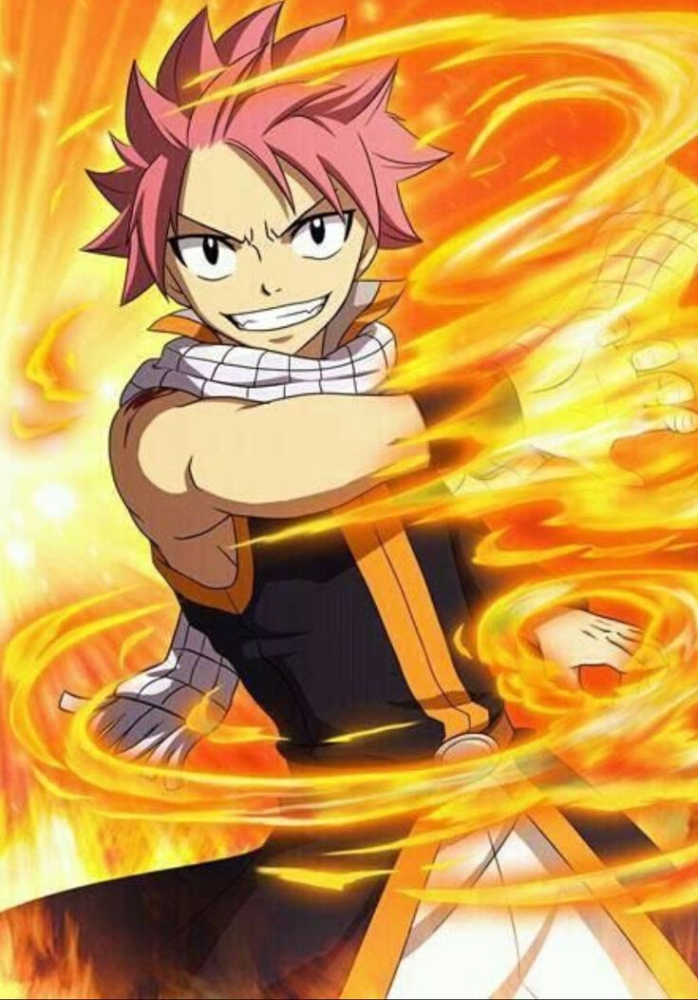
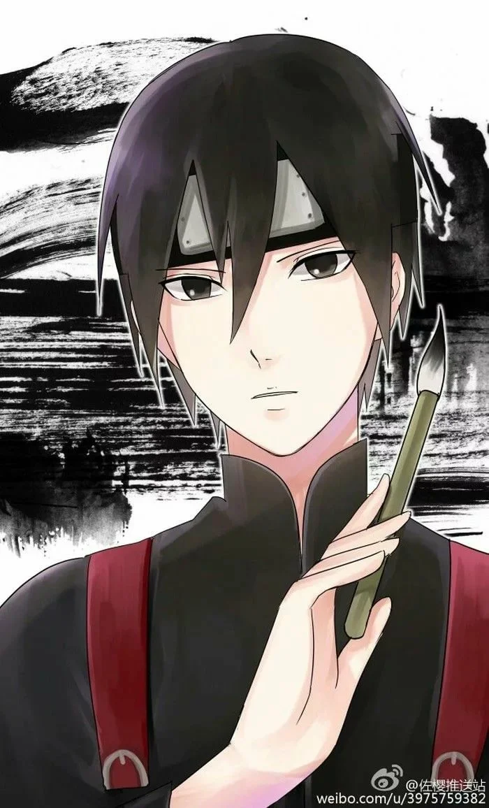
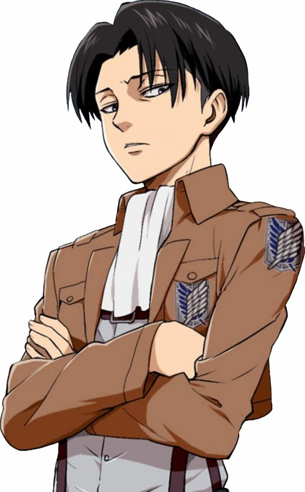
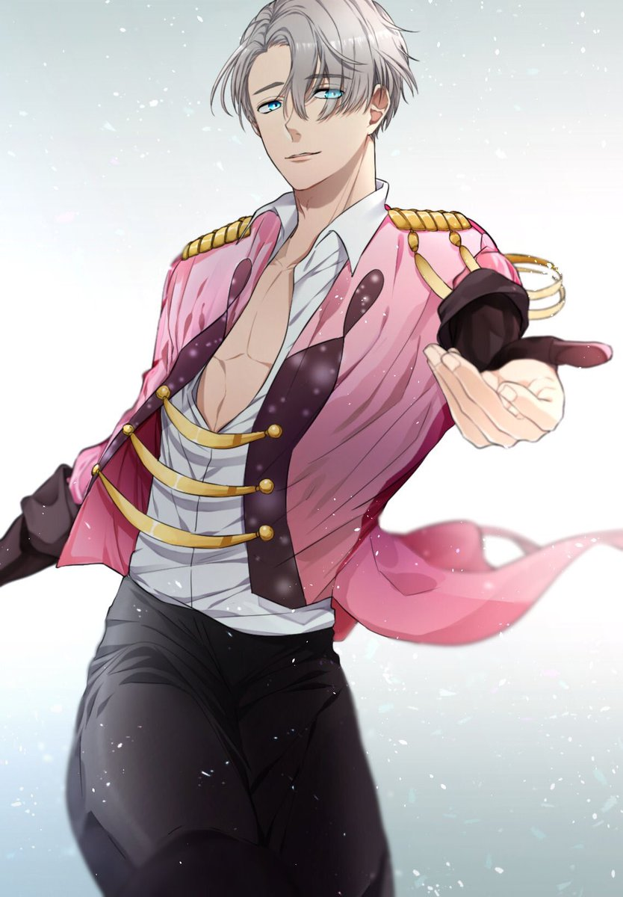
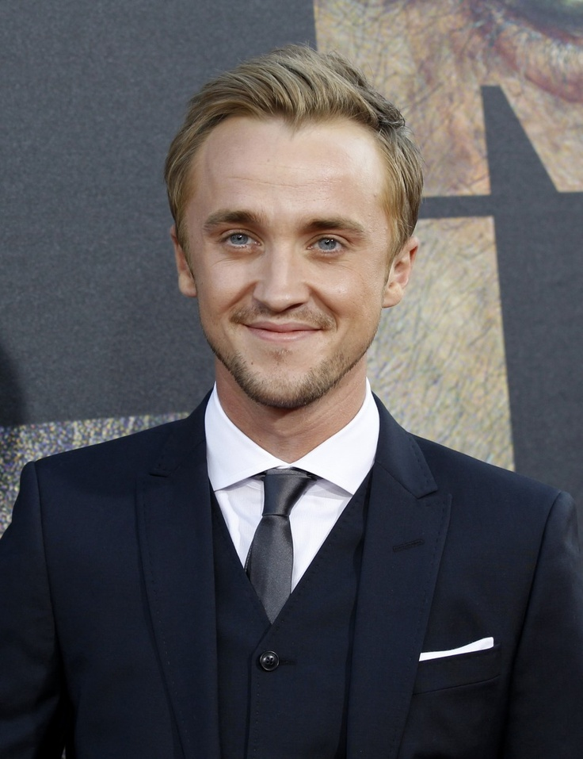
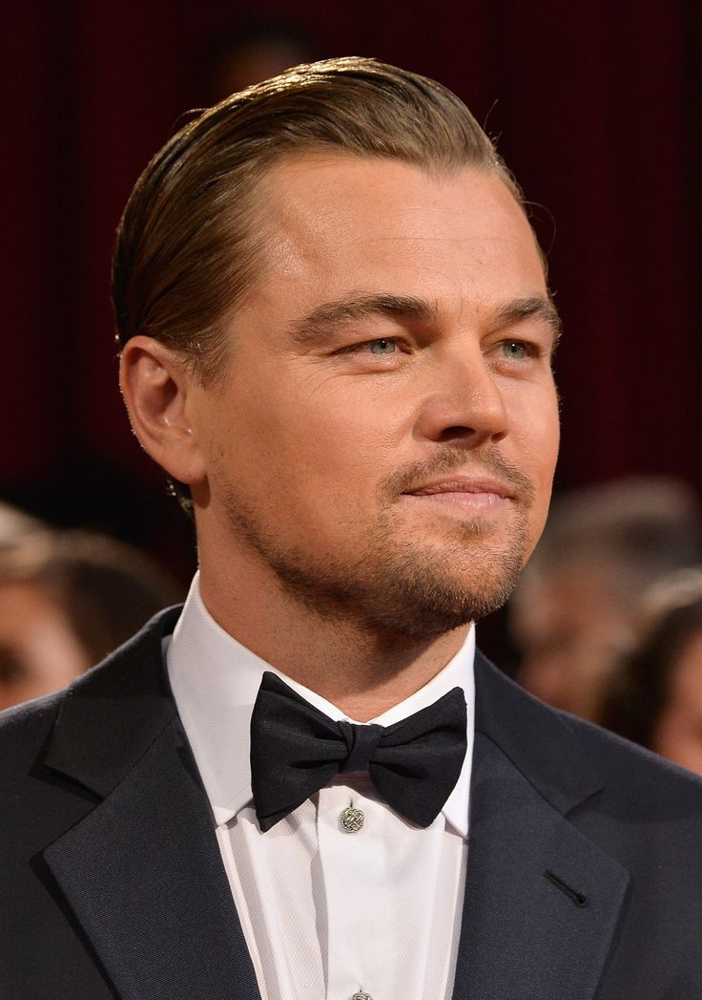
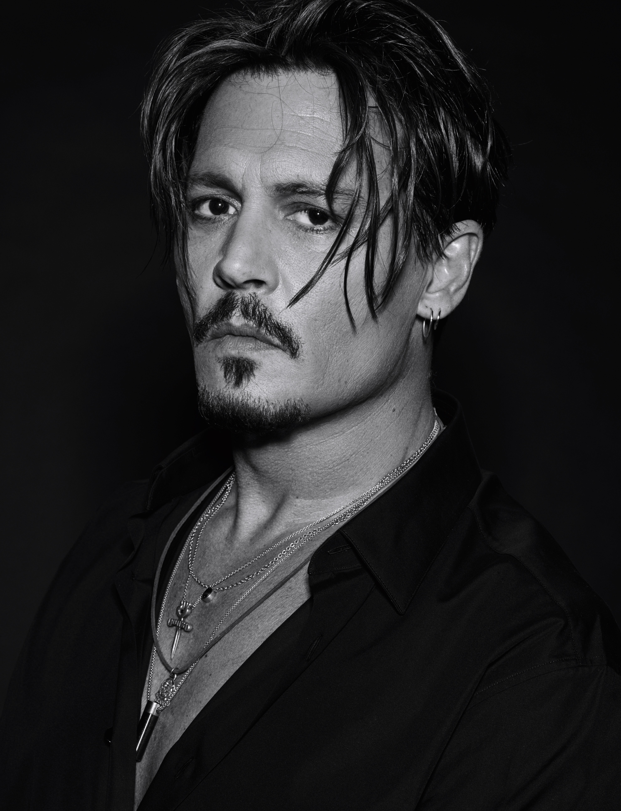
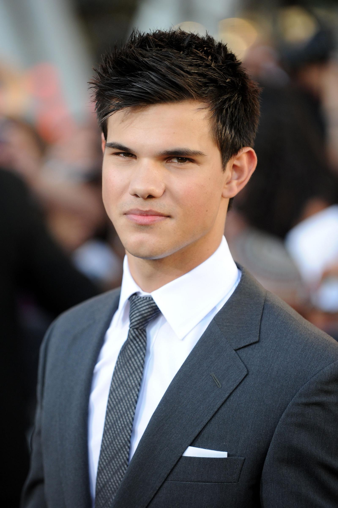

По идеи тут длжны быть какие то важные( или не очень) люди, но тут будут аниме герои и крутые актеры, потому что я не знаю кого сюда вставить.

Нацу Драгнил
Fairy Tail
Маг гильдии Хвост Феи, а также член Команды Нацу( короче создатель). Является младшим братом Зерефа, первоначально умерев более 400 лет назад, который возродил его как самого сильнейшего Этериаса, Он также один из пяти Убийц Драконов, который был отправлен в будущее на 400 лет вперёд, чтобы победить Акнологию

Сай Яманака
Naruto
Чубу из Конохагакуре представитель клана Яманака. До этого он был членом Не.Саю было поручено подавить все человеческие эмоции внутри себя, из-за чего он испытывает трудности в общении с людьми. Когда он становится заменой Учиха Саске в команде Какаши, Сай открывает в себе прежние эмоции и стремится понять человеческие чувства.

Леви Аккерман
Атака титанов
Капитан разведывательного отряда и командир отряда специального назначения. Известен как «чистоплюй», достаточно резок и груб, уважает дисциплину. Однако ценит человеческую жизнь, поскольку без отвращения пожимает окровавленную руку погибающего товарища, чтобы успокоить того в последние минуты жизни.

Виктор Никифоров
Юри на льду
один из главных персонажей Аниме Юри на льду . 28-летний русский профессиональный фигурист, пятикратный чемпион мира. живая легенда спорта, обладатель харизмы рок-звезды.Юри с самого детства считал Виктора своим кумиром. А теперь, по непонятным причинам, и Виктора заинтересовала скромная персона Юри.

Том Фелтон
Британский актёр
Британский актёр кино, телевидения и озвучивания, певец и гитарист. Дебютировал в кино в 1997 году, сыграв второстепенную роль в комедии «Воришки», однако настоящая слава пришла к нему в роли Драко Малфоя в фильмах о Гарри Поттере

Леонардо Ди Каприо
Американский актёр
Американский актёр и продюсер. Лауреат премии «Оскар», трёхкратный лауреат премии «Золотой глобус», лауреат премии BAFTA, обладатель «Серебряного медведя» Берлинского кинофестиваля.

Джонни Депп
Американский актёр
Американский актёр, кинорежиссёр, музыкант, сценарист и продюсер.Pодился 9 июня 1963 Оуэнсборо, Кентукки,США Наибольшую известность Джонни принес образ капитана Джека Воробья в серии фильмов «Пираты Карибского моря».

Тэйлор Лотнер
Американский актёр
Американский актёр,наибольшую известность получил благодаря участию в фильмах «Приключения Шаркбоя и Лавы», «День Святого Валентина» и вампирской саге «Сумерки», где исполнил роль Джейкоба.